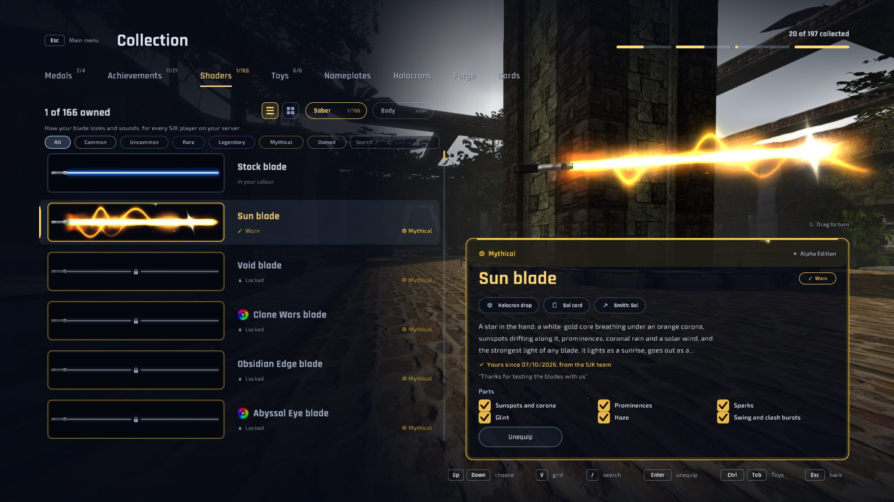
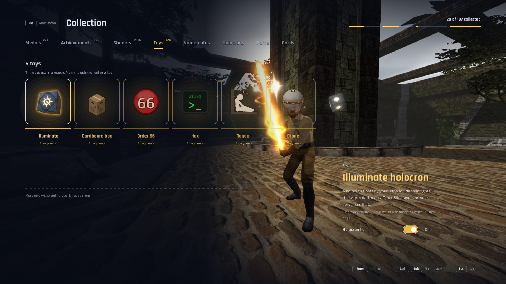

What SJK brings
SJK is Sol's vision of Jedi Academy, developed by Sol with contributors from the community.
- The SJK UI
- Classic Jedi Academy
- Collection
- Toys and emotes
- Community servers
- Identity and chat
- Graphics and comfort
The SJK UI
- The ringThe main page: SJK's emblem in a turning ring, the menu beside it, recent servers and SJK chat, over a camera tour of Yavin Training Grounds.
- SettingsSimple and Advanced views, a detail column saying what each setting does, and a search that finds any of them.
- Character creatorOne grid of tiles for model, head, torso, legs, skin, hat and cape. Every hat and cape is open to everyone.
- ServersA sortable list from two master servers, names in their colours, favourites, and the map's levelshot and players beside it.
- Loading to scoreboardThe same look from the first connection to the last round, with the classic versions one setting away.

Classic Jedi Academy
- Classic menusMain, profile, setup, controls and the join-server browser laid out like retail, one switch away in First setup or Settings.
- Classic scoreboardClient IDs, compact rows on full servers, and JoF EternalJK's rules for when it opens.
- Game HUDs from your filesThe original HUD, or any custom HUD pack that replaces
ui/hud.menu. - Sharp typeThe game's fonts redrawn as vector fonts, crisp at 4K, with Russian, Japanese and emoji in chat and names.

Collection
- HolocronsFound as you play, and opened crate-style for saber shaders and cards.
- Saber shadersBlades from Common to Mythical, Creyon's 128 Blade Lab signature blades among them, each with its own sounds.
- Blade cardsA card for every shader holocrons drop; holding one makes crafting its shader cheaper.
- Medals and achievementsShown on your profile, your card and the scoreboard.

Toys and emotes
- Ragdoll
toy_ragdollmakes you go limp and fall; every SJK player sees the same fall, and lifts and trains carry you. - Drone
freecamandpeekfly a training remote others see. Nobody is peeked without their consent. - Hax, Order 66, cardboard boxHack a willing player, die together when the order comes, or hide in a carton, Metal Gear style.
- IlluminateA holocron floats by your shoulder and lights the way in dark maps.
- Emotes
emotesopens a picker; other SJK players on your server see them and hear their music.

Community servers
- JA+ serversSJK joins as a JA+ plugin client, with RGB sabers, predicted JA+ moves without snap-backs, and JA+ tools under
japlus. - JoF serversJoF tools under
jof.: Destruction on the Force wheel, server dialogue, and JoF's own content when you opt in. - Siege and CTFRespawn waves, objectives and their announcements, the hack bar, and flag carriers named on the scoreboard.
- Reliable joiningLost handshake packets and gamestates are recovered, and old 72-bone player models load.

Identity and chat
- SJK identityA key made on your PC proves who you are to the SJK hub, with no account or password.
- Profile and cardYour picture, bio, medals and blade, on a card other players can open.
- SJK chatTalk with SJK players wherever they play; news from the SJK team shows there too.
- Encrypted whispersWhispers between SJK players are encrypted end to end, with safety codes to compare.
- Discord statusYour Discord profile shows the server, map and mode you play.

Graphics and comfort
- Graphics presetsVanilla style, SJK (recommended) or Experimental real-time lighting, from one dropdown.
- Modern lightingHDR, bloom, shadows, volumetrics, day and night, rain and snow, each in Settings › Graphics.
- NameplatesHealth, shield and Force over players, shared between the SJK players who share theirs.
- Quick wheelPages of actions, toys and emotes on one key, with a searchable catalogue.
- Smooth pacingThe FPS cap holds its exact rate and can follow your monitor.

Why SJK
SJK aims to be a true JKA+: everything players expect from today's community clients, from the retail look and feel to mod servers such as JA+ and JoF and modern screens, in a client that stays clean and fast. No bloat: every feature has to earn its place and its frame time, and the original game's behaviour comes first.
Support SJK
Optional: SJK stays free and open source either way.
Sol develops SJK alone, with Claude, Anthropic's AI, writing much of the code under his direction. Donations have one purpose: a full Claude plan used only for SJK.
Sol has a long list of tasks ready, and many of them can run side by side as separate agents. A full plan means more of that work at once, so SJK gets better faster.
Nothing is sold: every feature stays free for everyone, and a donation brings no advantage in the game.
Monthly goal
200 € a month
A Claude plan is billed every month, so the bar starts again each month.
Donate on Ko-fiSupporter medal Donate more than 1 € with your SJK key id in the Ko-fi message and the Supporter medal is yours as soon as Ko-fi tells the SJK hub, shown on your SJK profile, your player card and the scoreboard. Your key id is in Settings › Network › SJK identity key (Copy key id). Without one, Sol matches the donation by hand.
Screenshots
Frames rendered by the SJK client itself, on the game's own data.
What's new
Every release's changes are in the changelog, and its files on the releases page.
Install
You need a legally owned copy of Star Wars Jedi Knight: Jedi Academy (Steam, GOG or disc). SJK ships no game files.
Windows 10/11, x64
-
Extract into GameData
Download the Windows ZIP and extract all of it into the game's
GameDatafolder, besidebase:GameData/ ├─ base/ (assets0-3.pk3) ├─ sjk.exe ← start ├─ sjk-server.exe └─ README-SJK.txtOn Steam: right-click Jedi Academy › Manage › Browse local files › GameData.
-
Launch
Start
sjk. No path or setting is needed. Windows may warn about an unrecognised app because the builds are not code-signed; choose More info › Run anyway if you trust the download (checksums are in the release).
Linux, x64
-
Extract into GameData
Download the Linux ZIP and extract all of it into the game's
GameDatafolder, besidebase. -
Launch
Run
./sjk. It needs a working Vulkan or OpenGL graphics driver.
Mac with Apple Silicon (experimental)
-
Extract
For M1 or later; there is no build for Intel Macs. Extract the Mac ZIP into the game's
GameDatafolder, besidebase; SJK also looks for the game in Steam's Mac library. -
Launch
Open
SJK.app. It is not signed by Apple, so macOS blocks it until you allow it once: its README says how. It has not been played on a Mac yet, so reports are welcome.
-
Settings and updates
Settings, binds, screenshots and demos live in
GameData/SJK/. SJK checks for a new release when it starts and installs it from its Update page, keeping that folder. It opens on the SJK UI; First setup or Settings › Interface › Menu style switches to the classic menus. -
On JA+ servers
SJK identifies as a JA+ plugin client. JA+ puts new players in its alternate dimension, where the grapple is off: use
/amAltDimto leave it.serverconfiglists the server's JA+ options. -
From source
Install Rust 1.88+, then
cargo build --release -p sjk-viewer -p sjk-dedicated, which buildssjkandsjk-server. See the README for platform notes and the dedicated server.
Credits and community
Sol develops SJK and decides where it goes. Contributors send pull requests; players' ideas, art and reports are credited in every release's notes and in CREDITS.md.
- CreyonPull requestsEternalJK parity, and the Blade Lab's 128 signature blades.
- LumayaPull requestsFree camera, jetpack, JoF EternalJK's scoreboard and Force effects.
- SlashPull requestsSiege and CTF, the vehicle HUD, and the whispers' safety codes.
- LukasPull requestsCombo binds, camera settings, chat and console comfort.
- MilamberPull requestsSee and share nameplates, and JoF EternalJK in SJK chat.
Found a bug or have an idea? Use Report a bug in the client, open an issue on the issue tracker, or talk to us on the SJK Discord.
SJK is free software under the GPL-2.0-only license. It began in October 2026 as a modified version of JKR, an engine by Bishop. Copyright © 2026 Sol-Vulpes, Bishop-R and the JKR contributors; copies and modified versions keep the notice and credits, and use their own name and emblem. Every release includes its matching source snapshot, and the full source is on GitHub. Star Wars, Jedi Knight and Jedi Academy are trademarks of their respective owners. SJK is a fan project, not affiliated with or endorsed by Lucasfilm, Disney, Raven Software or Activision. No game files are included; the screenshots show SJK running on a legally owned copy of the game.